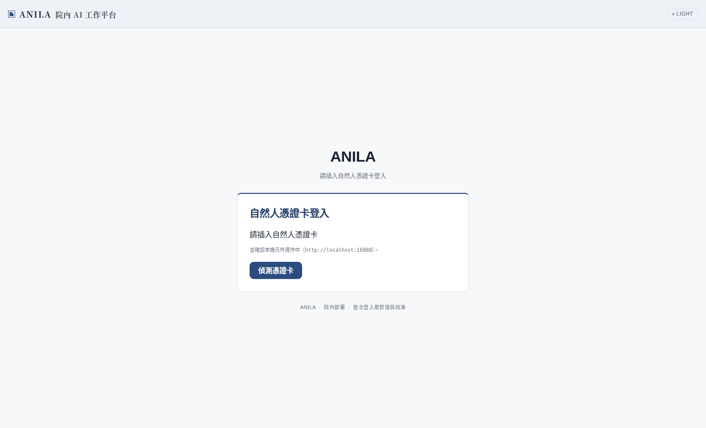
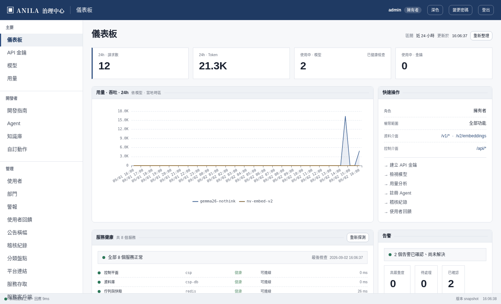
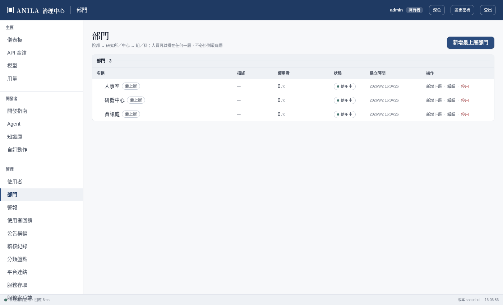
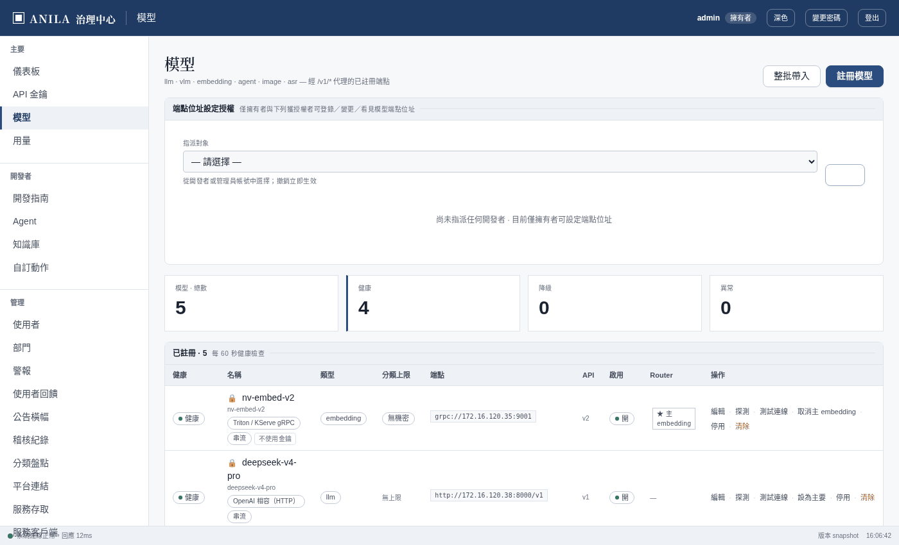
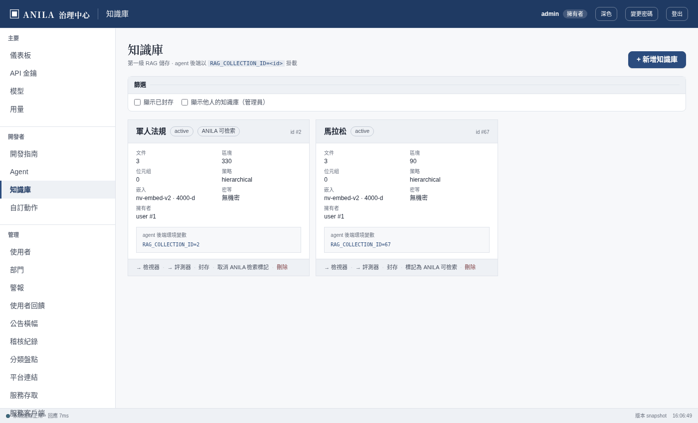
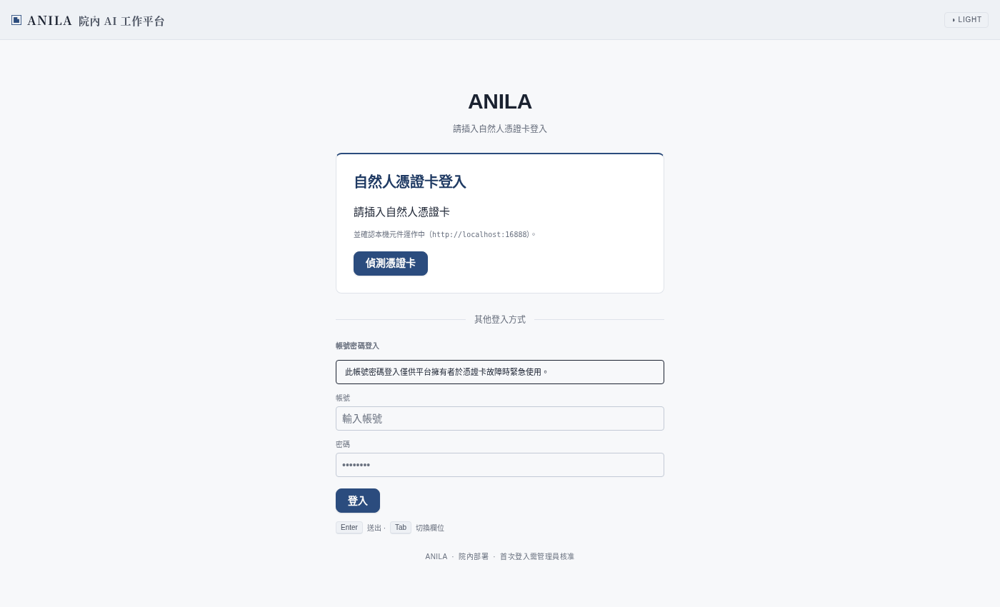

給內網平台主機的安裝與維運人員 · 平台版本 v1.0.1 · 2026-09-02
本手冊寫的是把 ANILA v1.0.1 出貨包裝上內網平台主機、驗證、之後維運的完整流程。它假設：
需要更深的細節（每一步的手動備援、歷史教訓）時，看第 14 節列的 runbook；本手冊是主線，runbook 是附錄。
版本規則：這條線從 2026-09-02 起以 v1.0.0 重新起算，之後修 bug 升 patch（v1.0.1）、加功能升 minor（v1.1.0）。舊線（2026-07 以前）的 v1.x／v2.x 全部是 legacy，號碼比較大不代表比較新，不要拿舊線的東西回來用。
| 元件 | 容器 | 做什麼 | 沒有它會怎樣 |
|---|---|---|---|
| 反向代理 | nginx | 唯一對外的 443；TLS、路徑分流（/ 治理中心、/anila/ 對話介面、/api、/v1）、關閉中的入口回「暫時維護中」。 | 全站打不開。 |
| 控制平面 | csp | 卡登驗章、帳號、單位、模型登記、稽核、治理中心網頁、資料面代理。 | 登入與治理全停。 |
| 資料庫 | csp-db（pgvector） | 所有資料，含規章向量。 | 全停。唯一要備份的東西。 |
| 佇列與快取 | redis | 文件匯入佇列、撤銷清單。 | 上傳不處理、登出不生效。 |
| 對話介面 | anila-ui | 同仁看到的畫面（靜態檔）。 | /anila/ 空白。 |
| 對話路由 | router | 分析問題、決定要不要查規章、派給哪個 agent、組合回答。 | 問問題回 503。 |
| 文件匯入 | ingestion-worker | 解析上傳的文件、切塊、算向量。 | 知識庫文件卡在處理中。 |
| 簡報 | anila-studio、pptx-renderer | 由對話產生簡報。 | 只影響簡報功能。 |
| 語音（選配） | asr-gateway、asr-decoder | 麥克風輸入轉文字。gateway 一定在平台主機；decoder 可本機或外部（第 11 節）。 | 麥克風按鈕不出現。 |
| 附屬（預設關） | codeserver、n8n、gitlab、anilalm | 開發與自動化工具、ANILA LM。nginx 預設回 404 或「暫時維護中」。 | 無影響。 |
出貨包是一個資料夾，由開發機從乾淨的 git tag建出來：
anila-images-export-v1.0.1/
├── MANIFEST.txt ← 身分：Ref、commit、建置時間、含不含 ASR
├── CHECKSUMS.sha256 ← 每個映像檔的雜湊
├── INTRANET-LOAD.sh ← 載入腳本（三道閘）
├── intranet-image-overrides.yml ← 讓 compose 用載入的映像而不是 build
├── 01-compose-images.images.txt ← 映像清單
├── 01-compose-images.files.txt
└── 01-images/ ← 15 個 .tar.gz，約 6 GB
├── anila-restart-csp.tar.gz
├── anila-restart-anila-ui.tar.gz
├── anila-restart-router.tar.gz
├── anila-restart-ingestion-worker.tar.gz
├── anila-restart-anila-studio.tar.gz
├── anila-restart-pptx-renderer.tar.gz
├── anila-restart-asr-gateway.tar.gz
├── anila_asr-decoder_0.1.0.tar.gz
├── anila-restart-anilalm.tar.gz
├── anila-codeserver_local.tar.gz
├── nginx_1.30.4-alpine@sha256_….tar.gz
├── pgvector_pgvector_pg16.tar.gz
├── redis_7-alpine.tar.gz
├── n8nio_n8n_1.98.2.tar.gz
└── gitlab_gitlab-ce_19.2.1-ce.0@sha256_….tar.gz出貨包只有映像。設定（.env）、憑證、密碼都是在內網主機上由安裝腳本產生的，不在包裡，也不該在包裡。程式碼與文件（含本手冊）由對應版本的 repo 帶進去。
唯一的差別在 MANIFEST.txt 的 Ref 欄位：
Ref 長什麼樣 | 是什麼 | 載入腳本的行為 |
|---|---|---|
v1.0.1（乾淨 tag） | 出貨包 | 照常載入 |
v1.0.1-3-gabcdef0、…-dirty、裸 hash | 演練包（tag 之後又改過的樹） | 拒絕，除非設 ALLOW_REHEARSAL_BUNDLE=1（只准在演練環境） |
$ head -8 MANIFEST.txt
ANILA Platform — Intranet Image Bundle
Built at: 2026-09-02T14:59:42+08:00
Branch: main
Commit: a433883b
Ref: v1.0.1 ← 收到包先看這一行
Project: anila-restart
INCLUDE_ASR: 1載入腳本的三道閘：① Ref 是乾淨 tag；② CHECKSUMS.sha256 全部相符；③ 每個映像 docker load 成功且 tag 與清單一致。任何一道紅就停，不會載進一半。
| 要帶 | 從哪來 | 用在哪 |
|---|---|---|
| 出貨包資料夾（整個） | 開發機 build-and-export | 第 5 節載入 |
| 對應版本的 repo（程式碼與文件） | 同一個 tag 的 checkout 或壓縮檔 | compose 檔、nginx 設定、安裝腳本、本手冊都在裡面 |
server.pfx（平台網域的 wildcard 憑證＋私鑰） | IT／憑證管理單位 | nginx 的 https |
| 模型 gateway 的 API 金鑰 | 在模型主機上簽發 | .env 的 MODEL_GATEWAY_API_KEY |
| 擁有者的員工編號 | 擁有者本人 | CARD_INITIAL_OWNERS；這個員編刷卡直接是擁有者 |
| 正式單位清單 | 人事 | 第 7 節第一件 |
| 密碼管理器 | — | 安裝腳本產生的 8 把密鑰要存進去 |
絕不帶進內網：開發機的 .env、secrets/ 目錄、secrets/dev-card-ca/（假卡的測試 CA）、任何 CARD_* 的本機值。帶進去的話，平台會信任假卡，或者用開發機的密碼跑正式環境。
下表是開發機實測環境（本手冊的截圖與演練都在這台做），內網主機以此為下限對照。沒有量到的格子寫「未量測」，不寫估計值。
| 項目 | 開發機實測 | 說明 |
|---|---|---|
| 作業系統 | Ubuntu 22.04.5 LTS | 其他 Linux 只要 Docker 跑得起來即可，未在別的發行版驗證 |
| Docker Engine | 28.2.2 | 指令是 docker compose（v2），不是舊的 docker-compose |
| Docker Compose | 2.36.2 | 載入腳本與 compose 檔都以 v2 語法寫；2.36 的網路所有權語意已實測 |
| CPU | 24 核 | 平台本身負載很輕；本機語音解碼（CPU 版）是最吃 CPU 的元件 |
| 記憶體 | 62 GB | 全棧含語音在開發機上實際佔用未量測；不開語音時明顯更少 |
| 磁碟 | 映像 70 GB（含開發用映像）、資料卷 48 GB、容器 3 GB | 出貨包載入後的映像約 20 GB；資料卷隨對話與上傳檔案成長，資料放獨立分割區方便備份 |
| GPU | 無 | 平台主機不跑模型；本機語音解碼用 CPU 版 overlay（infra/compose/asr-cpu.yml） |
| 網路 | — | 能連到模型主機的 443；內網 DNS 能解析平台網域與模型主機網域；防火牆只開 443 入向 |
| 時間 | — | NTP 同步。卡片簽章與登入權杖都看時間，時鐘偏差大登入會失敗 |
在 repo 根目錄執行安裝腳本，把出貨包路徑當參數：
cd /opt/anila # repo 解壓處
bash infra/deployment/intranet/intranet-deploy.sh /path/to/anila-images-export-v1.0.1腳本的每一步開頭都印 [n/7]：
| 步 | 做什麼 | 你要做的 |
|---|---|---|
| [0/7] 前置檢查 | 確認在 repo 根目錄、docker 可用、找到出貨包 | — |
| [1/7] TLS 憑證 | 從 server.pfx 抽出憑證與私鑰到 infra/nginx/certs/ | 回答 pfx 路徑與密碼（空密碼直接 Enter） |
| [2/7] 模型 gateway CA | 把 repo 內建的 CSPKI CA bundle 放到 share/pki/model-ca.pem，供 csp 驗模型主機的 https | 通常不用回答；沒有內建 bundle 時才會問 PEM 路徑 |
| [3/7] 產生 .env | 從 .env.example 產 .env：自動生 8 把密鑰、寫死 ANILA_AUTH_MODE=card-only、問擁有者員編與 gateway 金鑰 | 回答員編、貼金鑰；把畫面列出的密鑰存進密碼管理器再按 Enter |
| [4/7] 載入映像 | 執行 INTRANET-LOAD.sh：三道閘＋docker load | 看它全綠 |
| [4b/7] JWT 簽章金鑰 | 產 secrets/jwt-private.pem／jwt-public.pem。一定在起棧之前 | — |
| [4c/7] 目錄所有權 | 把 share/、secrets/ 的擁有者對齊容器帳號 | — |
| [5/7] docker network | 建 anila-models-net | — |
| [6/7] 起棧 | docker compose -p anila-restart … up -d --no-build，含語音 profile | — |
| [7/7] 等 csp healthy＋驗證 | 探五個入口、印健康摘要 | 看第 6 節 |
問題不是固定序列：它依主機上已經有什麼決定要不要問。不要把一串固定答案 pipe 給它。
| 問題 | 什麼時候出現 | 怎麼答 |
|---|---|---|
image 包資料夾路徑 | 沒把路徑當參數 | 出貨包絕對路徑 |
重新從 pfx 抽取?(會覆蓋) | 憑證檔已存在（重跑時） | 首次安裝不出現；換憑證答 y |
server.pfx 路徑／pfx 密碼 | 需要抽憑證 | 路徑；空密碼直接 Enter |
保留現有 secret? | .env 已存在（重跑時） | 答 Y。答 n 會重生資料庫密碼，既有資料庫就連不上 |
偵測到預設 owner … 確定用這組? | 環境或 .env 已有員編 | 對就 y，不對就 Enter 讓它再問 |
CARD_INITIAL_OWNERS — owner 員工編號 | 上一題沒確認 | 擁有者員編，多人用逗號；不可留空 |
MODEL_GATEWAY_API_KEY | 一律出現 | 貼金鑰；還沒簽發可 Enter 跳過，之後補進 .env 並重建 csp |
存好了按 Enter 繼續 | 本次有新產生密鑰 | 存進密碼管理器後 Enter |
CARD_INITIAL_OWNERS=1147259 \
COMPOSE_PROJECT_NAME=anila-restart \
INCLUDE_ASR=1 \
ASR_OVERLAY=infra/compose/asr-cpu.yml \
bash infra/deployment/intranet/intranet-deploy.sh /path/to/anila-images-export-v1.0.1COMPOSE_PROJECT_NAME 一律 anila-restart：出貨包的映像名綁這個專案名，改了會找不到映像。INCLUDE_ASR=0 不起語音；GPU 主機把 overlay 換成 asr-gpu.yml。docker compose -p anila-restart ps
# 期望：csp / csp-db / redis / nginx / router / anila-ui / ingestion-worker /
# anila-studio / pptx-renderer 全部 healthy 或 running；
# asr-gateway / asr-decoder（有開語音時）healthyH=https://anila.ai.ncsist.org.tw
curl -sk -o /dev/null -w '%{http_code} %{content_type}\n' $H/ # 200 text/html 治理中心
curl -sk -o /dev/null -w '%{http_code} %{content_type}\n' $H/anila/ # 200 text/html 對話介面
curl -sk $H/health # {"status":"healthy",...}
curl -sk -o /dev/null -w '%{http_code}\n' $H/anilalm/ # 503 刻意關閉，正常
curl -sk $H/.well-known/jwks.json | head -c 80 # 要有 "keys"，回 500 = JWT 金鑰沒產用擁有者的卡刷進治理中心（網址根目錄）。不應有任何憑證警告；有＝憑證沒換到 wildcard 或 DNS 沒生效。

.env。
在內網主機上，模型的健康燈應該是綠的；不是綠的先查 MODEL_GATEWAY_API_KEY、模型主機 DNS 與 share/pki/model-ca.pem，不是平台本身。（開發機上這一格必然紅，因為連不到模型主機。）
前五件的共同點：漏掉不會有錯誤訊息，症狀出現在同仁開始用的那一刻。第六件會報錯，但錯在第一個問題。
擁有者刷卡進治理中心 → 部門 → 新增。擁有者進場不需要單位存在，所以這個順序才通。

.env 的 ADMIN_PASSWORD 只在擁有者帳號被建立的那一次被消費。帳號建好之後再改 .env，資料庫裡的密碼不會變，而且沒有任何錯誤訊息。要換密碼用治理中心 → 使用者 → 重設密碼。首次安裝時 .env 裡的值就是能登入的密碼，請存進密碼管理器。
腳本 [4b/7] 已做。漏掉的症狀是「起來了但登入炸」：/.well-known/jwks.json 回 500，登入發不出權杖，anila-studio 反覆重啟。手動補：
# 跟安裝腳本 [4b/7] 一模一樣的指令；--user 0:0 是必要的（secrets/ 屬於主機帳號，容器預設 uid 10001 寫不進去）
mkdir -p secrets
docker run --rm --user 0:0 -v "$PWD/secrets:/out" --entrypoint python anila-restart-csp:latest \
/app/scripts/generate-jwt-keypair.py --output-dir /out
# 然後重跑腳本讓 [4c/7] 對齊所有權，或手動 chgrp 後：
docker compose -p anila-restart -f compose.yaml -f intranet-image-overrides.yml up -d csp
docker exec anila-nginx nginx -s reload| 檔案 | 來源 | 去處 | 驗證 |
|---|---|---|---|
server.pfx | IT | infra/nginx/certs/server.{crt,key} | openssl x509 -in server.crt -noout -subject -dates → CN 是 *.ai.ncsist.org.tw |
| CSPKI CA bundle | repo 內建 | share/pki/model-ca.pem | echo | openssl s_client -connect <模型主機>:443 -CAfile share/pki/model-ca.pem 2>/dev/null | grep 'verify return code' → 0 (ok) |
secrets/dev-card-ca/ | 開發機 | 不進內網 | 內網主機上不該有這個目錄 |
ANILA_MODEL_CA_FILE 是「取代」整個信任庫，不是疊加：指到空檔或壞檔，csp 所有出向 https 全掛。先在主機上驗到 verify return code: 0 再交給容器。
治理中心 → 模型，找一顆 LLM 按「設為主要」。腳本會把模型登記進來，但不會選主路由；沒有它，第一個問題就回「ANILA Router 無可用主路由模型」。

治理中心 → 知識庫 → 該知識庫的開關。新建的知識庫預設沒有標；沒標的話規章問答整個不存在，畫面看起來正常，模型憑印象編條號。

六件做完，用一張真的卡（不是擁有者）走一遍，每格留下產物（截圖或回應碼），不要只打勾：
| # | 做什麼 | 判準 |
|---|---|---|
| 1 | 同仁刷卡 → 註冊選單位 → 等待核准 | 治理中心 → 使用者「待審核」變 1 |
| 2 | 管理員核准 → 同仁再刷卡 | 進到 /anila/，左下顯示他的名字 |
| 3 | 問一題規章問題 | 答案上方有步驟清單，下方有「查看 N 筆來源」，來源側欄有檔名 |
| 4 | 問一題非規章問題 | 答案上方寫「本次未檢索院內規章」 |
| 5 | 上傳一份 PDF 到知識庫 | 狀態變 indexed；問它的內容答得出來 |
| 6 | 治理中心 → 用量 | 剛才的請求有記到 |
| 7 | 破窗（第 12 節） | /login?show_alternatives=1 出現帳密欄位，擁有者真的登得進去；記下登入後右上的角色 |
| 8 | 拔卡、關瀏覽器、重開 | 要重新刷卡才能進 |
第 3、4 項在同一個對話裡問，最能看出平台「查了」和「沒查」的差別。
每次更新都是一個新的出貨包（新的 tag）。流程：
cd /opt/anila
# 0. 備份資料庫（第 10 節）
# 1. 換 repo 到新版本（解壓或 checkout 新 tag）；.env、secrets/、share/、infra/nginx/certs/ 都不在 repo 裡，不會被蓋掉
# 2. 載入新映像（三道閘）
cd /path/to/anila-images-export-vX.Y.Z && bash INTRANET-LOAD.sh && cd /opt/anila
cp /path/to/anila-images-export-vX.Y.Z/intranet-image-overrides.yml ./intranet-image-overrides.yml
# 3. 重建容器（資料庫遷移在 csp 啟動時自動跑；遷不過 csp 會拒絕啟動，不會半套）
docker compose -p anila-restart -f compose.yaml -f infra/compose/asr-cpu.yml -f intranet-image-overrides.yml \
--profile asr up -d --no-build
# 4. 重載反向代理（容器換了 IP，nginx 只在載入設定時解析一次）
docker exec anila-nginx nginx -t && docker exec anila-nginx nginx -s reload
# 5. 第 6 節的驗證再跑一次更新後請同仁硬重新整理（Ctrl+Shift+R）。 還開著的舊分頁點下一頁時會去抓已經不存在的舊檔案，症狀是點了沒反應或畫面空白。發一則公告最省事（治理中心 → 公告橫幅）。
只重建單一服務時也要重載 nginx。 例如 up -d csp 之後全站 502、但 docker compose ps 每個都綠，就是這個。
改了 infra/nginx/anila.conf 要 up -d --force-recreate nginx，不是 restart：那個檔是單檔掛載，編輯器換了 inode 之後容器仍抓舊檔，沒有任何錯誤。
只有資料庫需要備份（上傳的原始檔在 share/uploads/，一起備更保險）。排程每晚：
ANILA_DB_CONTAINER=anila-restart-csp-db-1 ANILA_BACKUP_DIR=/var/backups/anila \
bash infra/deployment/scripts/backup-csp-db.sh還原先在丟棄用的 Postgres 演練，核對列數，再談切回；還原前要先建 csp_app 角色，否則權限設定會靜默失敗。完整手順：docs/runbooks/csp-db-backup-restore.md。
wildcard 憑證到期換發後，重跑安裝腳本的 [1/7]（會問「重新從 pfx 抽取」答 y），然後 docker compose -p anila-restart restart nginx。CSPKI CA 換代時更新 share/pki/model-ca.pem 並 restart csp。憑證是目錄掛載，restart 就讀得到。
# 全停（含語音 profile；不帶 --profile asr 會留下 asr 兩個容器）
docker compose -p anila-restart -f compose.yaml -f infra/compose/asr-cpu.yml -f intranet-image-overrides.yml --profile asr down
# 全起
docker compose -p anila-restart -f compose.yaml -f infra/compose/asr-cpu.yml -f intranet-image-overrides.yml --profile asr up -d --no-build
docker exec anila-nginx nginx -s reloaddown -v 會刪掉資料庫。日常永遠不要帶 -v。
.env 的 MODEL_GATEWAY_API_KEY → up -d csp → reload nginx。CARD_INITIAL_OWNERS（只對之後第一次刷卡的人生效）。nginx 對 /codeserver、/n8n、/gitlab/ 預設回 404，/anilalm/ 回「暫時維護中」（503）。這些是刻意的發行閘，不是故障，不要為它們動 nginx。要開放時照 docs/runbooks/anilalm-release-gate.md。
瀏覽器的麥克風按鈕只會打平台主機的 /asr/，nginx 轉給本機的 asr-gateway。解碼（語音轉文字）可以在本機容器做，也可以交給外部主機；外部解碼端取代的是 decoder，不是 gateway，gateway 一定要在平台主機上跑。
| 模式 | 起法 | .env |
|---|---|---|
| 本機解碼（出貨預設） | --profile asr up -d | ASR_DECODE_URL=http://asr-decoder:9000、ASR_DECODE_PROTOCOL=native、ANILA_ALLOW_HTTP_ENDPOINT=1、ANILA_TRUSTED_HOSTS 含 asr-decoder |
| 外部解碼 | --profile asr-remote up -d（只起 gateway） | ASR_DECODE_URL= 外部位址；ANILA_TRUSTED_HOSTS 加該主機；協定依對方（native 或 openai） |
| 不要語音 | INCLUDE_ASR=0，不帶 profile | — |
# 驗證 gateway 看到的解碼端
docker exec anila-restart-asr-gateway-1 python3 -c \
"import httpx,json;print(json.dumps(httpx.get('http://localhost:8200/asr/health').json(),ensure_ascii=False,indent=2))"
# reason: ok = 健康；decoder_unreachable = 連不到；decoder_unauthorized = 金鑰錯（不要去查網路）協定填錯的症狀是「麥克風看起來正常，每句話都失敗」；位址被出向檢查擋下的症狀是 gateway 開不了機，日誌有 ASR_DECODE_URL 未通過出向檢查(reason)。細節與 reason 對照：docs/runbooks/asr-voice-input.md。
card-only 模式關掉了帳密登入。如果讀卡元件或 CSPKI 出問題，所有人進不來，包括你。兩條路：
https://<平台>/login?show_alternatives=1，用擁有者帳密登入。後端只放行擁有者，其他人填了照樣進不來。.env 改 ANILA_AUTH_MODE=password → up -d csp → reload nginx → 處理完改回 card-only 再做一次。
| 症狀 | 原因 | 處理 |
|---|---|---|
| 全站 502，容器都綠 | nginx 拿著舊的容器 IP | docker exec anila-nginx nginx -s reload |
| csp 反覆重啟，日誌有 alembic | 資料庫遷移失敗 | csp 刻意拒絕半套啟動。看日誌那一條 migration，多半是資料庫版本超前或權限；還原備份再試 |
| 登入頁看得到帳密欄位 | ANILA_AUTH_MODE 不是 card-only | 改 .env → up -d csp → reload |
| 刷卡後「簽章驗證失敗」 | 卡片憑證鏈不在 CSPKI bundle 內，或時鐘偏差 | 確認是院內配發的卡；date 對時；假卡在正式機必然失敗，那是對的 |
| 登入成功但立刻被登出，jwks 回 500 | JWT 金鑰沒產 | 第 7.3 節 |
| 第一個問題回「無可用主路由模型」 | 沒設主路由 | 第 7.5 節 |
| 模型健康燈紅 | 金鑰、DNS、CA 三選一 | docker exec anila-restart-csp-1 printenv MODEL_GATEWAY_API_KEY | wc -c（不能是 1）；getent hosts <模型主機>；第 7.4 節的 openssl 驗證 |
| 規章問答不查規章 | 知識庫沒標可搜尋，或沒有主 embedding | 第 7.6 節；模型頁要有一列「主 embedding」 |
| 上傳的文件一直「處理中」 | ingestion-worker 或 redis 掛了、嵌入模型連不上 | docker logs anila-restart-ingestion-worker-1 --tail 50 |
改了 .env 沒生效 | 用了 restart | restart 不重讀 .env；要 up -d <服務>。確認：docker exec <容器> printenv 變數名，沒輸出就是沒進去 |
| 登入頁沒有憑證警告但同仁說有 | 同仁用 IP 或別的網域開 | 公告用正式網域；ALLOWED_HOSTS 與 nginx 的主機名清單要一起改 |
down 之後還剩 asr 兩個容器 | 沒帶 --profile asr | 第 10.3 節 |
| 載入腳本說「這是演練包」 | 包的 Ref 不是乾淨 tag | 不要繞過。回開發機從乾淨 tag 重建出貨包 |
| 文件 | 內容 |
|---|---|
docs/runbooks/intranet-deployment-runbook.md | 每一步的手動備援、模型主機端的金鑰簽發、本機模型混合模式、Triton gRPC 嵌入 |
docs/runbooks/intranet-deployment-tutorial.md | 演練實跡、出貨日程序、只能在內網驗的四項 |
docs/runbooks/first-install-rehearsal.md | 初裝六件的完整說明與「從零」會被繞過的五類地方 |
docs/runbooks/intranet-image-bundle.md | 出貨包怎麼建、怎麼驗媒體、載入時的陷阱 |
docs/runbooks/csp-db-backup-restore.md | 備份排程、保留策略、還原演練 |
docs/runbooks/asr-voice-input.md | 語音輸入的本機／外部解碼端、出向檢查 reason 對照 |
docs/runbooks/anilalm-release-gate.md | ANILA LM 入口的開關程序 |
docs/runbooks/rotate-tls-cert.md | 憑證輪替 |
docs/VERSIONING.md | 版本規則 |
docs/user-manual/admin.html、index.html | 管理員手冊、使用者手冊 |